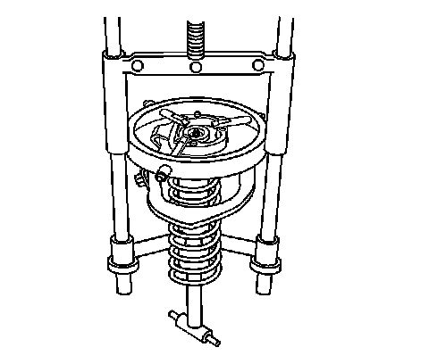
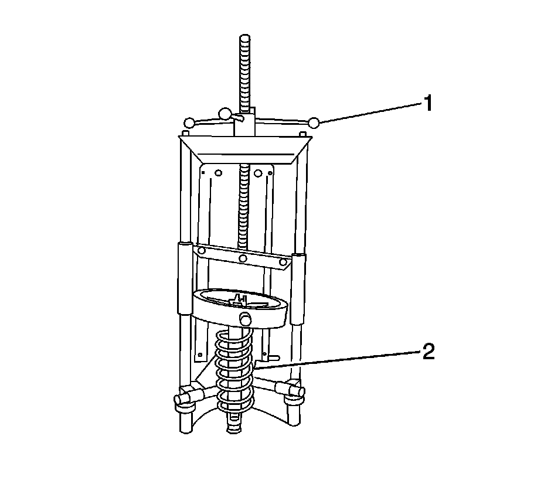
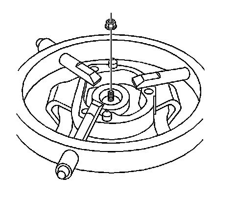

Front Suspension Coil Spring
Shock, Shock Component, and/or Spring Replacement
Removal Procedure
Notice: Use care when handling the coil springs in order to avoid chipping or scratching the coating. Damage to the coating will result in premature failure of the coil springs.
1. Raise and support the vehicle. Refer to Lifting and Jacking the Vehicle (Service and Repair) .
2. Remove the tire and wheel. Refer to Tire and Wheel Removal and Installation (Service and Repair) .
3. Remove the shock module from the vehicle. Refer to Shock Module Replacement (Front Suspension Shock Absorber) .

4. Install the shock module into the spring compressor.
5. Mark the upper control arm assembly and insulator for proper installation.

Important: The spring is compressed when the shock absorber moves freely.
6. Turn the spring compressor forcing screw (1) until the coil spring (2) is compressed.
7. Remove the magnaride sensor nut.

8. Remove the shock absorber upper retaining nut.
9. Remove the shock absorber from the shock module.
10. Loosen the compressor forcing screw until the upper mounting plate and coil spring may be removed.
11. Remove the upper control arm bracket assembly, insulator and coil spring from the spring compressor.
Installation Procedure
Important: Ensure the alignment pins in the upper control arm bracket is orientated 90 degrees with the shock absorber lower mounting holes.
1. Install the coil spring, insulator, upper control arm bracket assembly, and shock absorber to the spring compressor aligning all marks.
2. Turn the spring compressor forcing screw (1) until the coil spring is compressed.
Notice: Refer to Fastener Notice (Fastener Notice) .
3. Install the shock absorber retaining nut.
Tighten the nut to 25 N.m (18 lb ft).
4. Install the magnaride sensor nut.
5. Remove the shock module from the spring compressor.
6. Install the shock module to the vehicle. Refer to Shock Module Replacement (Front Suspension Shock Absorber) .
7. Install the tire and wheel. Refer to Tire and Wheel Removal and Installation (Service and Repair) .
8. Lower the vehicle.